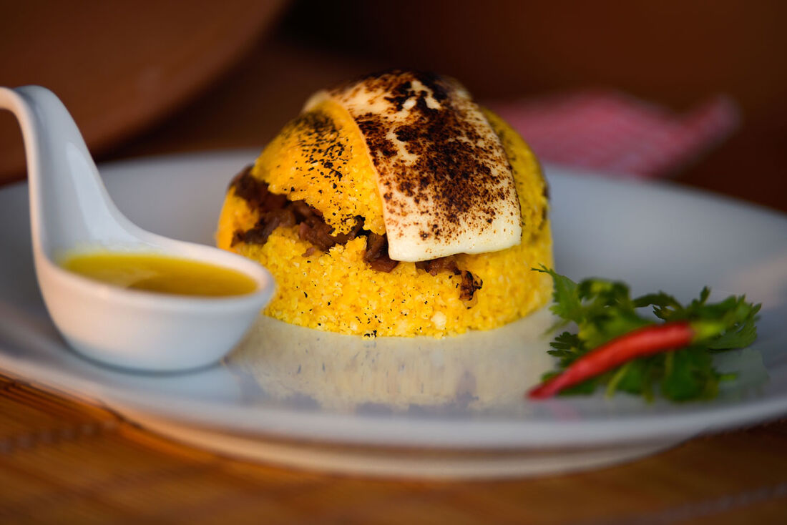
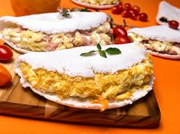
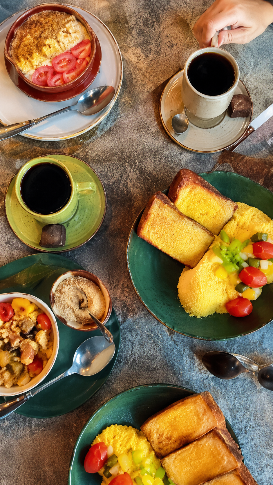

O verdadeiro café da manhã nordestino.
Receitas feitas com ingredientes regionais e muito carinho para deixar suas manhãs mais especiais.

Símbolo da nossa cultura, feito com carinho e tradição.

Leve, saborosa e com aquele toque que só o Nordeste tem.

O verdadeiro sabor nordestino servido logo pela manhã.